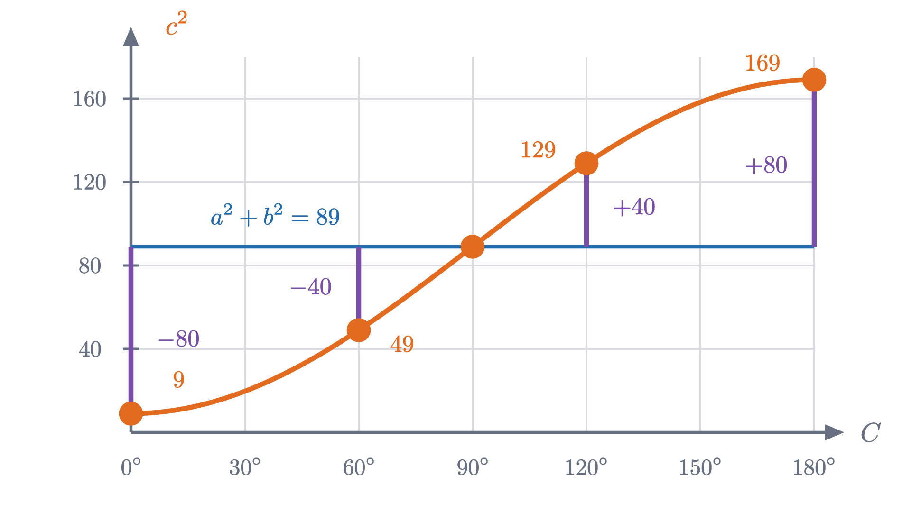
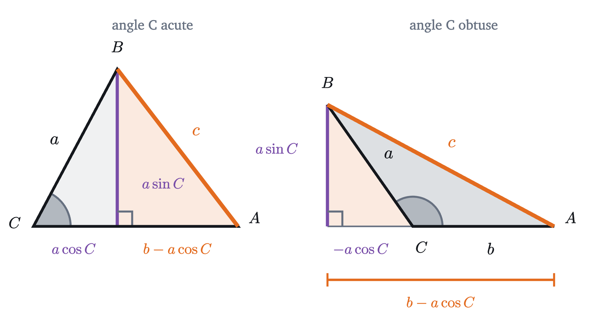
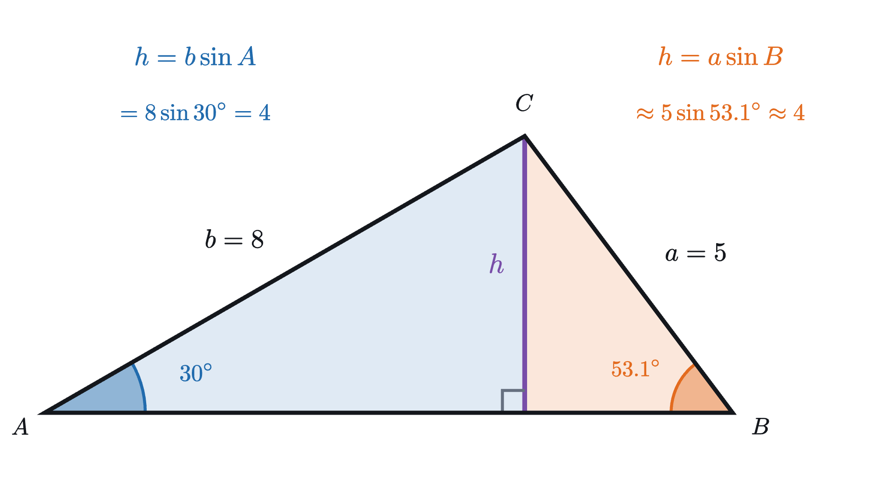
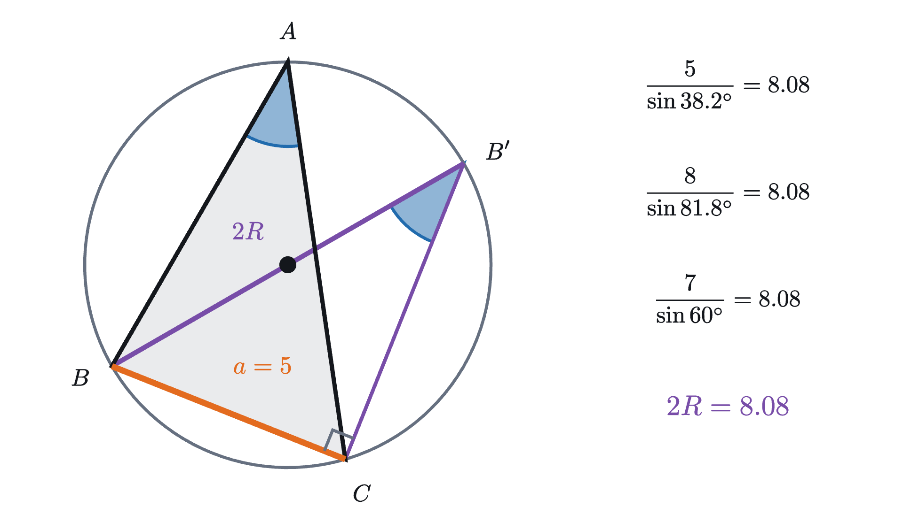

Law of cosines and law of sines: solving any triangle
The law of cosines is the Pythagorean theorem corrected for angles other than 90°. With the law of sines it solves any triangle, two-answer case included.
AssumesThe unit circle: sine and cosine as coordinatesThe Pythagorean theorem: a proof you can seePythagorean identity: why sin² + cos² = 1
Two straight roads leave a junction. One runs 5 km to a farm and the other runs 8 km to a mill, and the angle between them at the junction is 60°. How far is it from the farm straight across to the mill?
If the angle were 90° this would be a problem for the Pythagorean theorem: the distance $c$ would satisfy $c^2 = 5^2 + 8^2 = 89$, so $c \approx 9.43$ km. But the angle is 60°, and the theorem says nothing about any angle other than a right angle. The triangle is still completely determined, since two rods of fixed length held at a fixed angle leave no freedom for the third side, so there must be a rule. The animation suggests its shape: as the hinge closes below 90° the square of the third side falls short of 89, and as it opens past 90° the square overshoots. The first aim of this lesson is to find the exact size of that shortfall.
What happens away from 90°
Three positions of the hinge can be worked out with no trigonometry. At 90°, $c^2 = 89$. With the hinge shut, at 0°, the short rod lies along the long one and the gap between their ends is $8 - 5 = 3$, so $c^2 = 9$. With the hinge wide open, at 180°, the rods lie end to end and $c = 8 + 5 = 13$, so $c^2 = 169$. Compared with the Pythagorean value 89, these are off by $-80$, $0$ and $+80$.
For 60° we need an idea, and the natural one is to make right angles where there are none.
The altitude turns one triangle without a right angle into two triangles with one each. The left one contains the 60° angle and the side of length 5, so its legs are $5\cos 60°$ and $5\sin 60°$. The right one then has two known legs, and its hypotenuse is the side we want. The farm is exactly 7 km from the mill, and $c^2 = 49$ falls short of 89 by 40.
Pause and try
Repeat the computation with the angle at $C$ equal to 120°. The foot $H$ of the perpendicular from $B$ now lands outside the triangle, on the far side of $C$ from $A$. How far is $H$ from $C$, how long are the legs of the right triangle $HAB$, and what is $c^2$?
Show answerHide answer
The side $CB$ makes an angle of $180° - 120° = 60°$ with the extension of $AC$ beyond $C$, so $CH = 5\cos 60° = 2.5$ and $HB = 5\sin 60°$, as before. This time $H$ is on the other side of $C$, so $HA = 8 + 2.5 = 10.5$. Then $c^2 = 10.5^2 + (5\sin 60°)^2 = 110.25 + 18.75 = 129$, which is 40 more than 89.
We now have five measurements of how far $c^2$ is from $a^2 + b^2 = 89$:
| angle at $C$ | 0° | 60° | 90° | 120° | 180° |
|---|---|---|---|---|---|
| $c^2$ | 9 | 49 | 89 | 129 | 169 |
| $c^2 - 89$ | $-80$ | $-40$ | $0$ | $+40$ | $+80$ |
Pause and try
Find a formula for the bottom row in terms of the angle $C$. You are looking for a function of the angle that takes the values $1, \frac{1}{2}, 0, -\frac{1}{2}, -1$ at these five angles, and for the meaning of the number 80 in terms of the sides 5 and 8.
Show answerHide answer
The cosine has exactly those values: $\cos 0° = 1$, $\cos 60° = \frac{1}{2}$, $\cos 90° = 0$, $\cos 120° = -\frac{1}{2}$, $\cos 180° = -1$. So the bottom row is $-80\cos C$, and $80 = 2 \times 5 \times 8$. The guess is $c^2 = 5^2 + 8^2 - 2\cdot 5\cdot 8\cos C$.

The law of cosines
Five points and a guess are not a derivation. To get one, redo the 60° computation with letters. From now on we use the standard labeling.
Drop the perpendicular from $B$ to the line $CA$, with foot $H$. In the right triangle $CHB$ the hypotenuse is $a$, so $HB = a\sin C$ and $CH = a\cos C$ when $C$ is acute. The remaining piece is $HA = b - a\cos C$. When $C$ is obtuse, the foot falls outside, at distance $a\cos(180° - C) = -a\cos C$ beyond $C$, and $HA = b + (-a\cos C)$, which is the same expression $b - a\cos C$. The negative cosine of an obtuse angle does the bookkeeping for us.

Either way, the Pythagorean theorem in triangle $HAB$ gives
The last two terms are $a^2(\cos^2 C + \sin^2 C)$, and $\sin^2 C + \cos^2 C = 1$ for every angle, so they collapse to $a^2$.
The picture argument needed two cases, and a third if you count $C = 90°$. Coordinates handle all of them at once.
The formula reads in two directions. Given two sides and the angle between them it produces the third side, as in the road problem. Given all three sides, it can be solved for the cosine of any angle:
Because the cosine of an angle between 0° and 180° is positive exactly when the angle is acute, the sign of $a^2 + b^2 - c^2$ tells you what kind of angle $C$ is. If $c^2 = a^2 + b^2$ then $\cos C = 0$ and $C = 90°$, which is the converse of the Pythagorean theorem. If $c^2 < a^2 + b^2$ the angle is acute, and if $c^2 > a^2 + b^2$ it is obtuse. A triangle with sides 6, 7, 10 has $36 + 49 = 85 < 100$, so its largest angle is obtuse (about 100.3°).
The law of sines
Every form of the law of cosines contains all three sides and one angle. Suppose instead that a surveyor knows one side and the angles at its two ends. With two sides unknown, no form of the law can be solved. We need a relation between sides and the angles opposite them, and an altitude supplies it again.
Take the triangle with $A = 30°$, $b = 8$ and $a = 5$, and drop the altitude from $C$ to the side $AB$. Call its length $h$. It is a leg of two right triangles at once.

From the left triangle, $h = b\sin A$. From the right triangle, $h = a\sin B$. So $b\sin A = a\sin B$, and dividing by $\sin A\sin B$ gives $\frac{a}{\sin A} = \frac{b}{\sin B}$: each side divided by the sine of its opposite angle gives the same number. Nothing singled out the corner $C$, so the third ratio $\frac{c}{\sin C}$ must equal the other two.
The same altitude gives the area. With base $c$ and height $h = b\sin A$, the area is $\frac{1}{2}bc\sin A$: half the product of two sides and the sine of the angle between them.
The coordinate proof covers the obtuse case that the two-triangle picture does not show. When $B$ is obtuse the altitude from $C$ falls outside the triangle, and its length is $a\sin(180° - B)$, which equals $a\sin B$ by the mirror symmetry of the unit circle.
Pause and try
For the road triangle ($a = 5$, $b = 8$, $c = 7$, with $A \approx 38.21°$, $B \approx 81.79°$, $C = 60°$), compute the three ratios $\frac{a}{\sin A}$, $\frac{b}{\sin B}$, $\frac{c}{\sin C}$ with a calculator. They agree, so their common value is some length belonging to the triangle. Any guess what it measures?
Show answerHide answer
$\frac{5}{\sin 38.21°} \approx \frac{5}{0.6186} \approx 8.08$, $\frac{8}{\sin 81.79°} \approx \frac{8}{0.9897} \approx 8.08$ and $\frac{7}{\sin 60°} = \frac{14}{\sqrt 3} \approx 8.08$. The common value is longer than every side. It is the diameter of the circle through the three corners, as the next figure shows.

Here is the argument for an acute angle $A$. Let the circle through $A$, $B$, $C$ have radius $R$, and draw the diameter $BB'$. By the inscribed angle theorem, all angles standing on the chord $BC$ from the same side are equal. Because $A$ is acute, the center of the circle lies on the same side of $BC$ as $A$, and $B'$, being on the line from $B$ through the center, lies on that side too. So the angle at $B'$ equals $A$. The same theorem says an angle standing on a diameter is a right angle, so triangle $BB'C$ has its right angle at $C$ and hypotenuse $2R$. In it, the side $a$ is opposite the angle $A$, so $a = 2R\sin A$, that is, $\frac{a}{\sin A} = 2R$. If $A = 90°$ then $BC$ is itself a diameter and $a = 2R$ directly. If $A$ is obtuse, $B'$ falls on the opposite side of $BC$ from $A$, and the same theorem makes the angle at $B'$ equal to $180° - A$, which has the same sine; we leave the details of that case as a sketch. So in every triangle the common ratio is the diameter of the circumscribed circle.
Two sides and an angle that is not between them
The road problem gave two sides and the angle between them, and had one answer. Keep the sides 5 and 8 but move the known angle: suppose $A = 30°$, $b = 8$ and $a = 5$, so that the angle is opposite one of the known sides. This is the triangle of the altitude figure. Was it the only one?
Think of building it. Draw the angle of 30° at $A$ and mark $C$ at distance 8 along one arm. The corner $B$ has to lie on the other arm, at distance $a$ from $C$. So hang a rod of length $a$ from $C$ and swing it until its free end touches the other arm.
So the data “two sides and an angle opposite one of them” does not always determine a triangle. For $a = 5$ there are two, and the law of sines finds both, provided we read it correctly. It gives
Two angles between 0° and 180° have sine $0.8$: an acute one, $B_1 \approx 53.13°$, and its supplement $B_2 = 180° - 53.13° = 126.87°$, because $\sin(180° - \theta) = \sin\theta$. Both leave room for a third angle, so both are real triangles:
| $B$ | $C = 150° - B$ | $c = \dfrac{a\sin C}{\sin A} = 10\sin C$ | |
|---|---|---|---|
| triangle 1 | 53.13° | 96.87° | 9.93 |
| triangle 2 | 126.87° | 23.13° | 3.93 |
In the figure these are the far landing point $B_1$ and the near one $B_2$. The triangle $CB_2B_1$ is isosceles, which is why the angles at $B_1$ and $B_2$ inside the two triangles are supplements of each other.
When $A$ is 90° or more, the same computation gives a different count, because now $b\cos A \le 0$. The root $b\cos A - \sqrt{a^2 - h^2}$ is never positive, and the root $b\cos A + \sqrt{a^2 - h^2}$ is positive exactly when $a^2 - h^2 > b^2\cos^2 A$, that is, when $a > b$. So there is one triangle if $a > b$ and none otherwise, which fits the fact that a right or obtuse angle is the largest angle of its triangle and must face the longest side.
Looking back
A triangle without a right angle can always be cut into two that have one, by an altitude. Applying the Pythagorean theorem across the cut gave the law of cosines, and measuring the altitude from both sides gave the law of sines. In each case the acute picture was easy and the obtuse one threatened a second case, and what removed the case split was the unit circle’s definition of cosine and sine for angles past 90°, which makes $(a\cos C, a\sin C)$ the right coordinates for every angle.
Between them the two laws solve any triangle from any three measurements that determine it. The one configuration that needs care is two sides with an angle opposite one of them, where the swinging rod may land twice.
Check yourself
In triangle $ABC$, $a = 5$, $b = 8$ and the angle $C$ between them is 120°. What is $c^2$?
Problems
A calculator is needed for most of these. The first three are direct, the next three take more than one step, and the last two ask for an argument.
Problem 1
Two sides of a triangle are 3 and 5, and the angle between them is 120°. Find the third side.
Show solutionHide solution
$c^2 = 3^2 + 5^2 - 2\cdot 3\cdot 5\cos 120° = 9 + 25 - 30\left(-\frac{1}{2}\right) = 34 + 15 = 49$, so $c = 7$. The answer is larger than $\sqrt{34} \approx 5.83$, as it must be for an obtuse angle.
Problem 2
A triangle has sides 4, 5 and 6. Find its largest angle. Is the triangle acute?
Show solutionHide solution
The largest angle is opposite the longest side, 6. $\cos C = \frac{4^2 + 5^2 - 6^2}{2\cdot 4\cdot 5} = \frac{5}{40} = \frac{1}{8}$, so $C \approx 82.82°$. Since the largest angle is less than 90°, all three are, and the triangle is acute. The quick test agrees: $16 + 25 = 41 > 36$.
Problem 3
In triangle $ABC$, $A = 45°$, $B = 60°$ and $a = 10$. Find $b$ and $c$.
Show solutionHide solution
$C = 180° - 45° - 60° = 75°$. By the law of sines, $b = \frac{a\sin B}{\sin A} = \frac{10\sin 60°}{\sin 45°} = 10\cdot\frac{\sqrt 3/2}{\sqrt 2/2} = 5\sqrt 6 \approx 12.25$, and $c = \frac{10\sin 75°}{\sin 45°} \approx \frac{9.659}{0.7071} \approx 13.66$. The sides are in the same order as their opposite angles: $a < b < c$ and $A < B < C$.
Problem 4
A hiker walks 6 km due east, turns 40° to the left and walks 4 km further. How far is she from her starting point?
Show solutionHide solution
The two legs of the walk are two sides of a triangle, but the angle between them inside the triangle is not 40°. Turning 40° away from straight ahead leaves an interior angle of $180° - 40° = 140°$ at the turning point. So $d^2 = 6^2 + 4^2 - 2\cdot 6\cdot 4\cos 140° \approx 52 + 36.77 = 88.77$, and $d \approx 9.42$ km. A sanity check: a small turn should leave her nearly $6 + 4 = 10$ km away, and 9.42 is close to that. Using 40° in the formula would give 3.90 km, which is the distance after turning back sharply by 140°.
Problem 5
In triangle $ABC$, $A = 40°$ and $b = 10$. Find all possible triangles (give $B$, $C$ and $c$) when (a) $a = 7$, (b) $a = 6$, (c) $a = 12$.
Show solutionHide solution
Here $h = b\sin A = 10\sin 40° \approx 6.428$.
(a) $h < 7 < 10$, so there are two triangles. $\sin B = \frac{10\sin 40°}{7} \approx 0.9183$, so $B \approx 66.67°$ or $B \approx 113.33°$. In the first, $C \approx 73.33°$ and $c = \frac{7\sin C}{\sin 40°} \approx 10.43$. In the second, $C \approx 26.67°$ and $c \approx 4.89$.
(b) $6 < h$, so there is no triangle. The law of sines says the same: it would require $\sin B \approx 1.071$, which no angle has.
(c) $12 \ge 10$, so there is one triangle. $\sin B = \frac{6.428}{12} \approx 0.5357$, giving $B \approx 32.39°$ or its supplement $147.61°$. The supplement is impossible, since $40° + 147.61° > 180°$. So $B \approx 32.39°$, $C \approx 107.61°$ and $c = \frac{12\sin 107.61°}{\sin 40°} \approx 17.79$.
Problem 6
A parallelogram has sides $a$ and $b$, and its diagonals have lengths $p$ and $q$. Prove that $p^2 + q^2 = 2a^2 + 2b^2$.
Show solutionHide solution
Let $\theta$ be one angle of the parallelogram. The neighboring angle is $180° - \theta$, because neighboring angles of a parallelogram are supplementary. One diagonal is the third side of a triangle with sides $a$, $b$ and included angle $\theta$, so $p^2 = a^2 + b^2 - 2ab\cos\theta$. The other closes a triangle with sides $a$, $b$ and included angle $180° - \theta$, so $q^2 = a^2 + b^2 - 2ab\cos(180° - \theta) = a^2 + b^2 + 2ab\cos\theta$, using $\cos(180° - \theta) = -\cos\theta$. Adding, the cosine terms cancel and $p^2 + q^2 = 2a^2 + 2b^2$. For a rectangle, $p = q$ and this is the Pythagorean theorem.
Problem 7
A student solves the triangle with $a = 4$, $b = 7$ and $C = 30°$ as follows. “By the law of cosines $c^2 = 16 + 49 - 56\cos 30° \approx 16.50$, so $c \approx 4.062$. By the law of sines $\sin B = \frac{7\sin 30°}{4.062} \approx 0.8616$, so $B \approx 59.5°$, and then $A = 180° - 30° - 59.5° = 90.5°$.” Find a quick reason to doubt the answer, locate the error, and give the correct angles.
Show solutionHide solution
The answer makes $A$ the largest angle, but $A$ is opposite the side $a = 4$, which is the shortest side. The largest angle must face the longest side, $b = 7$. The error is in reading $\sin B \approx 0.8616$: the angle could be $59.5°$ or $180° - 59.5° = 120.5°$, and the calculator offered only the first. The law of cosines settles it: $\cos B = \frac{a^2 + c^2 - b^2}{2ac} \approx \frac{16 + 16.50 - 49}{2\cdot 4\cdot 4.062} \approx -0.508$, which is negative, so $B$ is obtuse and $B \approx 120.5°$. Then $A \approx 180° - 30° - 120.5° = 29.5°$. Check with the law of sines: $\sin A = \frac{4\sin 30°}{4.062} \approx 0.4923$, and $\sin 29.5° \approx 0.4924$.
Problem 8
(a) Show that in any triangle $c = a\cos B + b\cos A$. (b) Write the two similar formulas for $a$ and $b$, and deduce the law of cosines from the three formulas using algebra only.
Show solutionHide solution
(a) Place $A$ at the origin and $B$ at $(c, 0)$, with $C$ above the axis. As in the lesson, $C = (b\cos A, b\sin A)$. Measured from $B$ instead, $C$ is at distance $a$ in a direction making the angle $B$ with the ray from $B$ toward $A$, so its $x$ coordinate is $c - a\cos B$. Equating the two expressions for the $x$ coordinate, $b\cos A = c - a\cos B$, which is the claim. It is valid for obtuse angles too, where one cosine is negative and the foot of the altitude falls outside the side.
(b) By relabeling, $a = b\cos C + c\cos B$ and $b = a\cos C + c\cos A$. Multiply the three formulas by $a$, $b$ and $c$ respectively:
Add the first two and subtract the third. The terms $ac\cos B$ and $bc\cos A$ cancel, leaving $a^2 + b^2 - c^2 = 2ab\cos C$, which is the law of cosines.